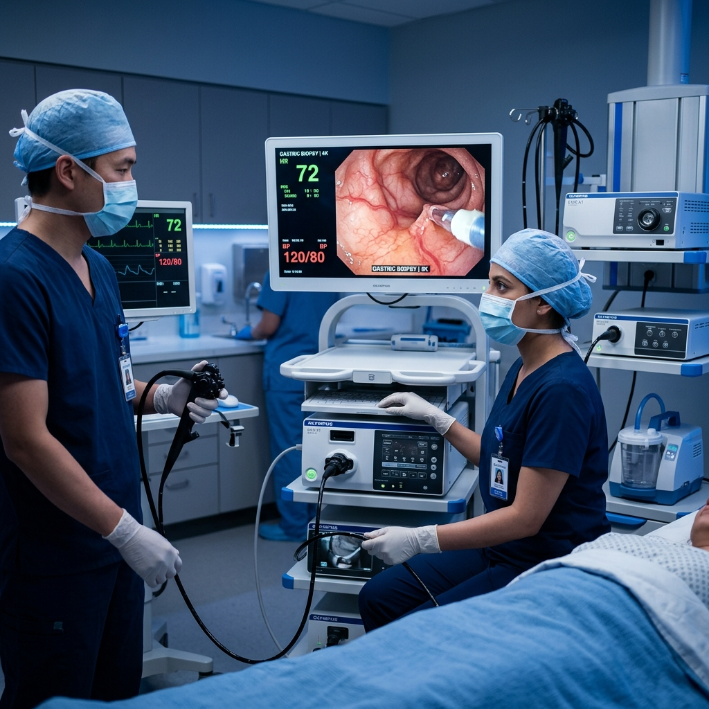
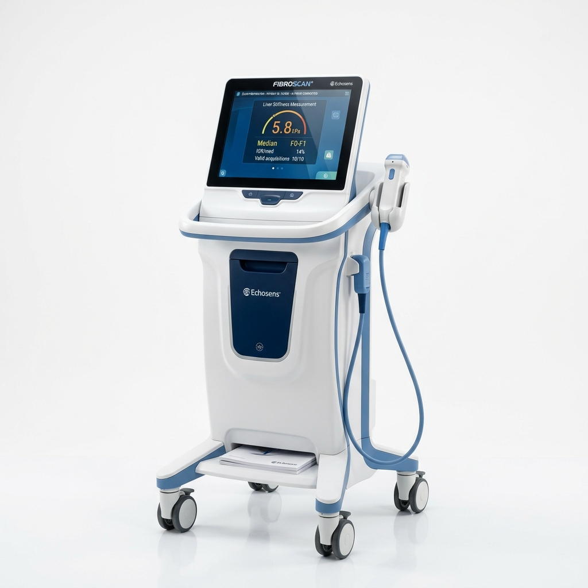
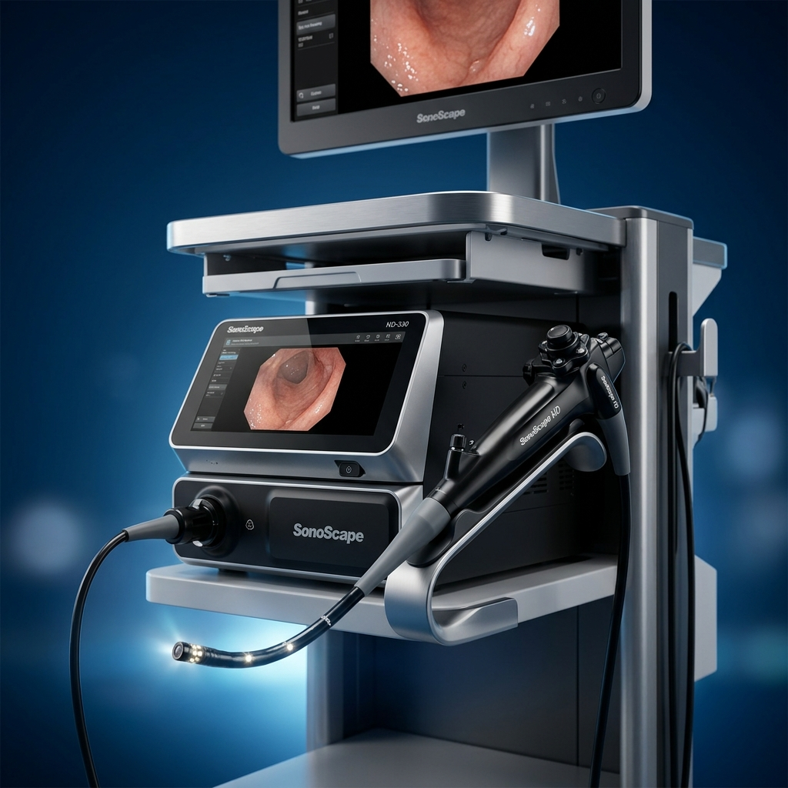
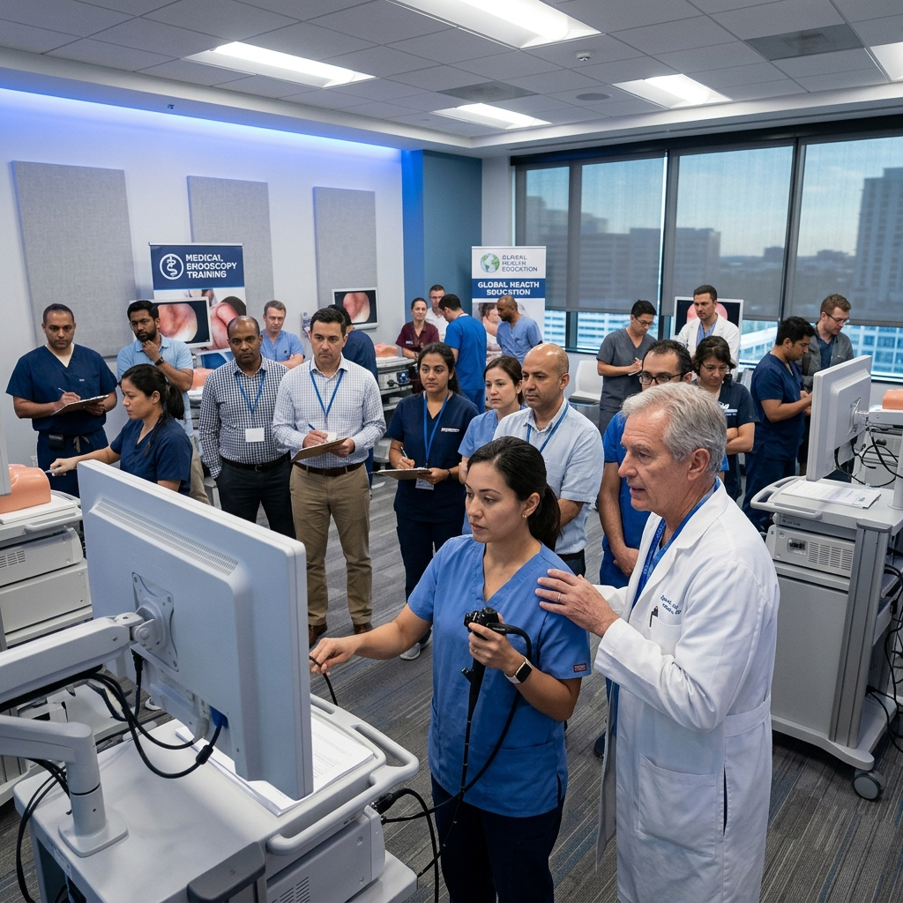
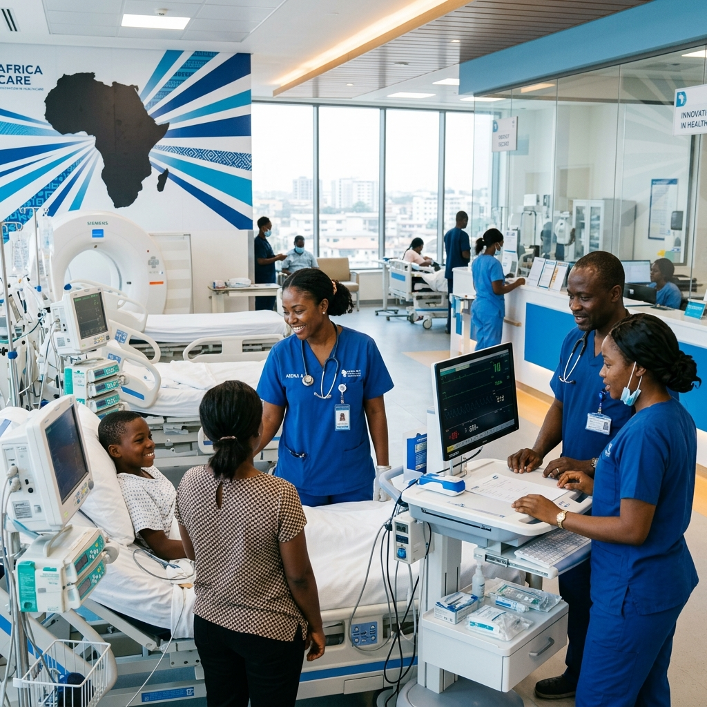

Fundada em 2013, somos a primeira escolha no serviço de venda de sistemas médicos de endoscopia digestiva em Portugal, com décadas de experiência em África.

Fundada em 2013, a Ecodanusa Global Medical Solutions nasceu com o propósito de ser a primeira escolha no serviço de venda de sistemas médicos de endoscopia digestiva em Portugal. Somos hoje a única empresa em Portugal integrada numa rede europeia multimarca de assistência técnica.
Sedeada na zona norte do país, a nossa atuação transcende fronteiras e nos PALOP's somamos mais de uma década de atividade com a entrega de projetos-chave na mão hospitalares.
Da venda à manutenção, passando pela formação – somos o seu parceiro de confiança em dispositivos médicos.
Endoscópios, eco-endoscópios, FibroScan, equipamentos de pneumologia, urologia, neonatologia e muito mais.
Ver produtosA única empresa em Portugal integrada numa Rede Europeia com acesso a parque de mais de 800 endoscópios de empréstimo multimarca.
Saber maisFormação abrangente em formatos presencial e online – cursos personalizados, webinars e vídeos com casos clínicos.
ExplorarTecnologia de ponta para os profissionais de saúde mais exigentes.


A única empresa em Portugal integrada numa Rede Europeia com acesso a parque de mais de 800 endoscópios de empréstimo multimarca.
Acesso a mais de 800 endoscópios de empréstimo para garantir a continuidade dos cuidados.
BasicRepair e SmartRepair — repare em vez de comprar nova sonda. Custo-benefício superior.
Acesso único à maior rede europeia de assistência técnica especializada em endoscopia.
Instalação completa e formação aprofundada de toda a equipa utilizadora.
Formação médica abrangente, nos formatos presencial e online, para profissionais de saúde de todo o mundo.
Cursos personalizados e práticos, webinars temáticos e portais educacionais gratuitos.
Formação especializada sobre a mais avançada tecnologia de cápsula endoscópica do mercado.
Treino hands-on em técnicas ablativas de radiofrequência guiadas por endoscopia.
Programas de formação para utilização otimizada do FibroScan e reprocessamento de endoscópios.
A nossa atuação transcende fronteiras. Entregamos projetos-chave na mão hospitalares em Angola, Moçambique e Cabo Verde.

A Ecoacademy orgulha-se de apoiar, juntamente com a nossa representada SonoScape, a Masterclass: Challenges and Solutions in Clinical Practice.
A Ecoacademy orgulha-se de apoiar, juntamente com a nossa representada Medi-Globe Group, este evento de formação especializada.

No dia 21 de abril de 2022, o novo Hospital Geral de Cabinda abriu, oficialmente, as suas portas aos utentes com equipamentos Ecodanusa.